FACULTY OF EDUCATION · COMPUTER EDUCATION
“เทคโนโลยีเปลี่ยนแปลงโลก แต่โค้ดคือเครื่องมือที่เปลี่ยนอนาคตของเรา”
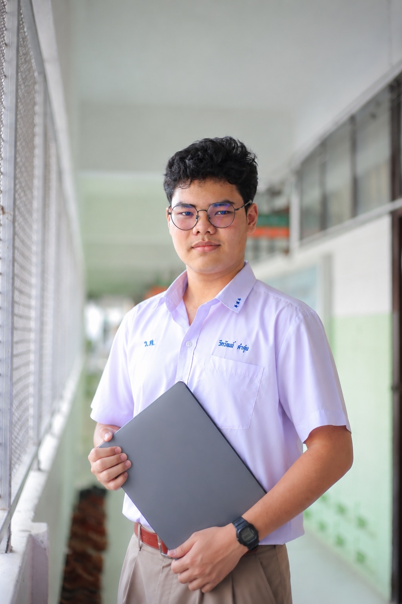
แฟ้มสะสมผลงาน (Portfolio) ฉบับนี้ จัดทำขึ้นเพื่อรวบรวมประวัติส่วนตัว ประวัติการศึกษา ความสามารถ ตลอดจนผลงานและกิจกรรมที่ผมได้เข้าร่วมตลอดช่วงการศึกษา เพื่อแสดงให้เห็นถึงความสนใจและความตั้งใจในการพัฒนาตนเองด้านคอมพิวเตอร์ เทคโนโลยี และการศึกษา
ผมมีความสนใจด้านเทคโนโลยีมาอย่างต่อเนื่อง และได้พยายามเปิดโอกาสให้ตนเองเรียนรู้จากประสบการณ์นอกห้องเรียน ไม่ว่าจะเป็นการอบรมด้าน Coding และ Artificial Intelligence (AI) การเรียนรู้ Prompt Engineering การพัฒนาทักษะการเขียนโปรแกรม ตลอดจนการเข้าร่วมการแข่งขันด้าน Cybersecurity – Capture The Flag (CTF) ประสบการณ์เหล่านี้ทำให้ผมได้ฝึกการคิดอย่างเป็นระบบ การแก้ปัญหา การทำงานร่วมกับผู้อื่น และการนำความรู้ทางคอมพิวเตอร์มาประยุกต์ใช้จริง
จากประสบการณ์ที่ได้รับ ผมมองว่าคอมพิวเตอร์ไม่ได้เป็นเพียงเครื่องมือสำหรับการเขียนโปรแกรม แต่สามารถเป็นเครื่องมือสำคัญในการสร้างการเรียนรู้รูปแบบใหม่ ผมจึงมีความตั้งใจที่จะศึกษาต่อในคณะศึกษาศาสตร์ สาขาคอมพิวเตอร์ศึกษา เพื่อพัฒนาความรู้ทั้งด้านเทคโนโลยีและการศึกษา และนำความรู้เหล่านั้นไปถ่ายทอดและสร้างประโยชน์ให้แก่ผู้อื่นในอนาคต
ผมหวังว่าแฟ้มสะสมผลงานฉบับนี้จะสะท้อนให้เห็นถึงตัวตน ความสนใจ ความพยายาม และความพร้อมของผมในการก้าวเข้าสู่การศึกษาระดับมหาวิทยาลัย และพัฒนาตนเองบนเส้นทางด้านคอมพิวเตอร์ศึกษาต่อไป
ความสนใจและความสามารถที่สะท้อนตัวตนของผม
เทศบาลเมืองร้อยเอ็ด
แผนการเรียน วิทยาศาสตร์ – คณิตศาสตร์ – คอมพิวเตอร์
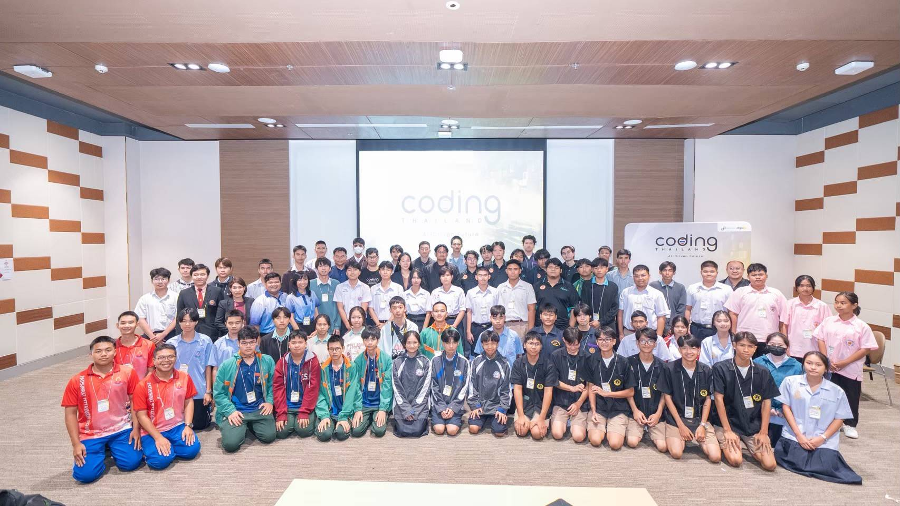
เข้าร่วมกิจกรรม Coding & AI – Acceleration และกิจกรรมเชิงปฏิบัติการด้านเทคโนโลยี ได้ฝึกการทำงานร่วมกัน การประยุกต์ใช้คอมพิวเตอร์ และการแก้ปัญหาจากสถานการณ์จริง
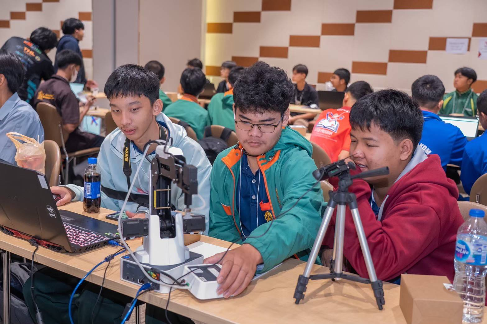
ฝึกใช้อุปกรณ์และคอมพิวเตอร์ร่วมกับทีม เพื่อพัฒนาทักษะการคิดวิเคราะห์และการทำงานเชิงระบบ
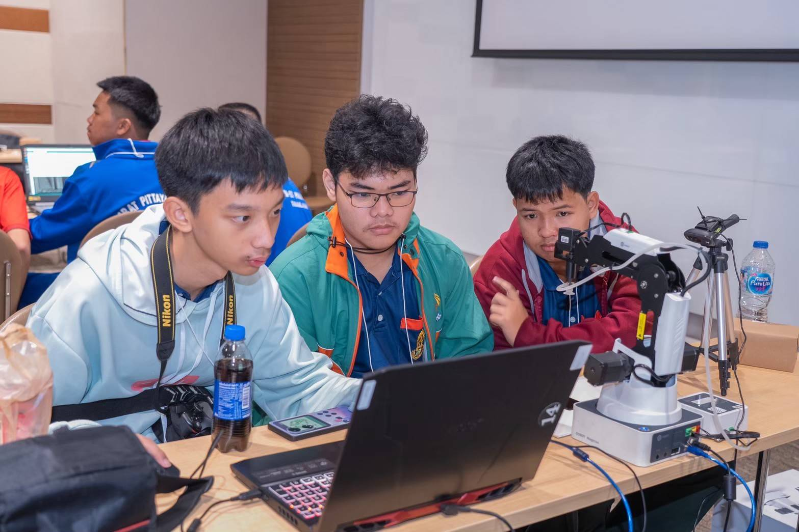
เรียนรู้จากการลงมือปฏิบัติจริง ทดลอง เชื่อมต่ออุปกรณ์ และร่วมกันแก้ปัญหา
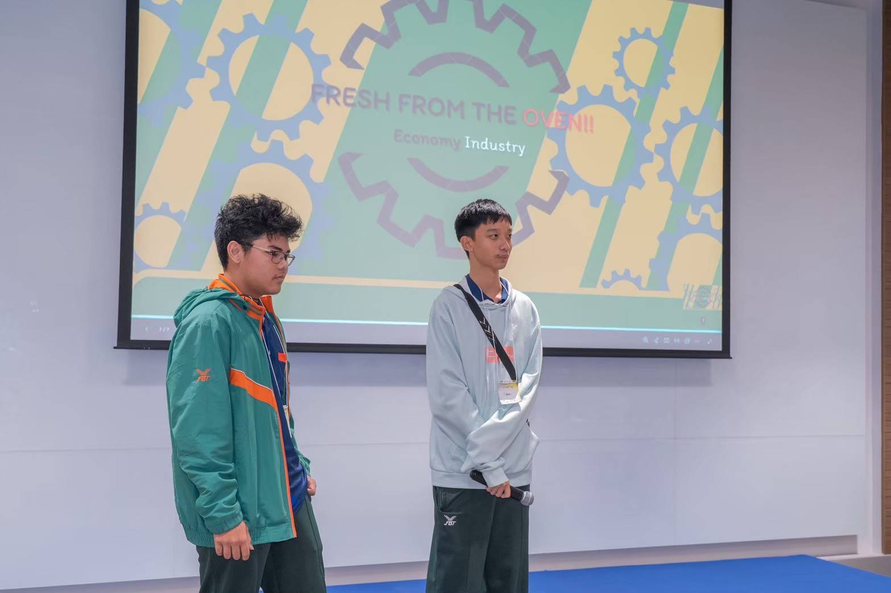
ฝึกการสื่อสาร การนำเสนอ และการทำงานร่วมกับผู้อื่นในกิจกรรมด้านเทคโนโลยี
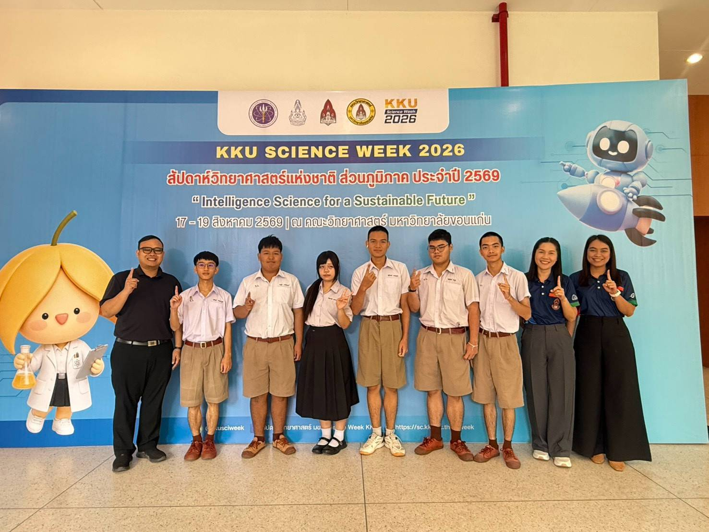
เข้าร่วมกิจกรรมสัปดาห์วิทยาศาสตร์แห่งชาติ ส่วนภูมิภาค ณ มหาวิทยาลัยขอนแก่น
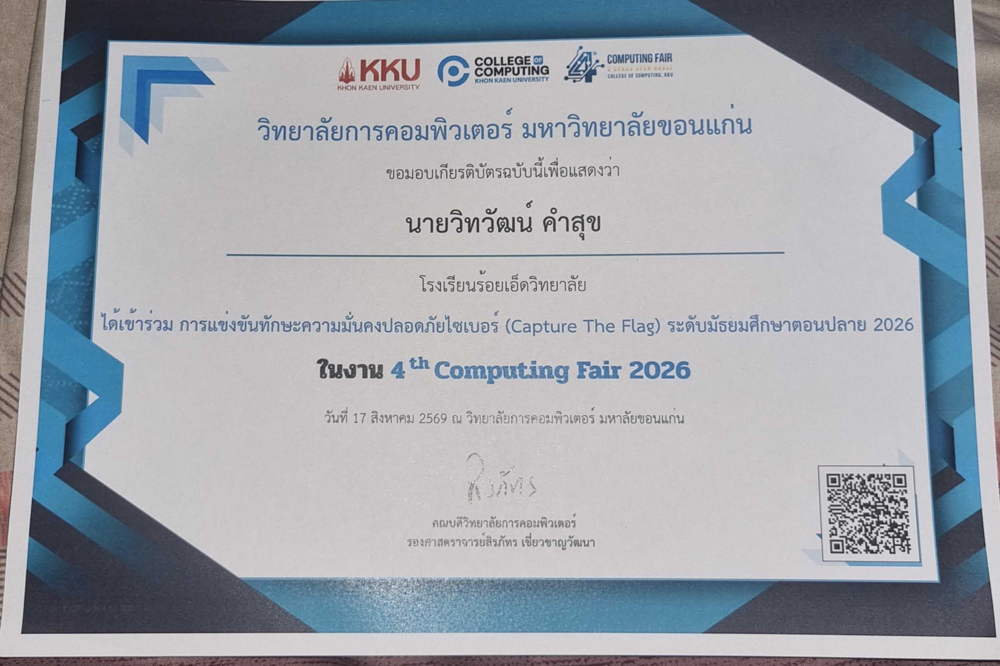
เข้าร่วมการแข่งขันทักษะความมั่นคงปลอดภัยไซเบอร์ ระดับมัธยมศึกษาตอนปลาย ในงาน 4th Computing Fair 2026 วิทยาลัยการคอมพิวเตอร์ มหาวิทยาลัยขอนแก่น
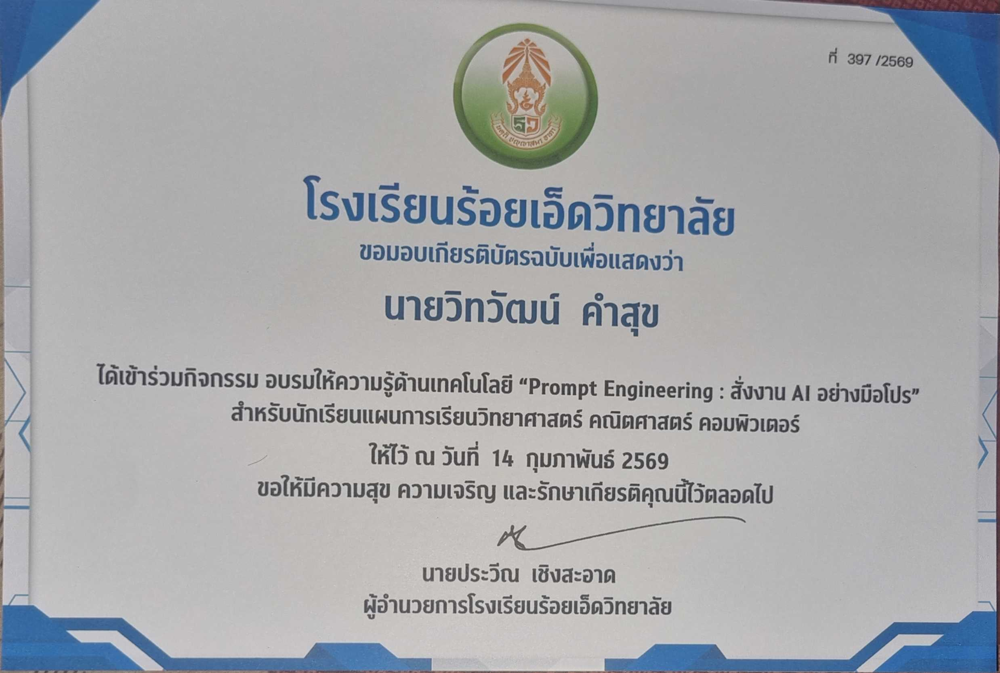
อบรม “Prompt Engineering : สั่งงาน AI อย่างมือโปร” เพื่อพัฒนาความเข้าใจการใช้งาน AI อย่างมีประสิทธิภาพ
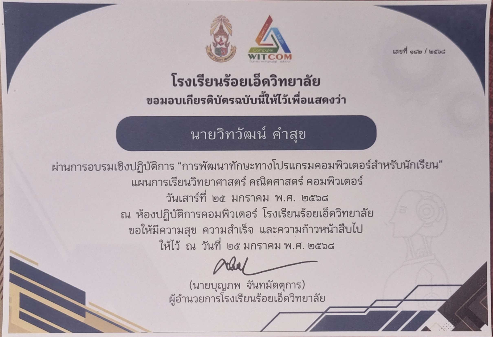
ผ่านการอบรมเชิงปฏิบัติการ การพัฒนาทักษะทางโปรแกรมคอมพิวเตอร์สำหรับนักเรียน
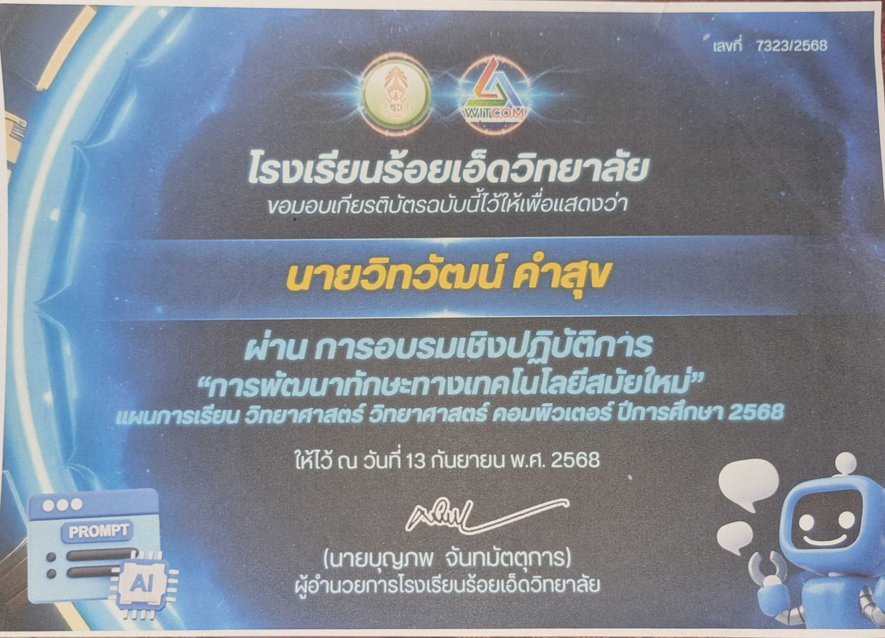
ผ่านการอบรมเชิงปฏิบัติการ การพัฒนาทักษะทางเทคโนโลยีสมัยใหม่
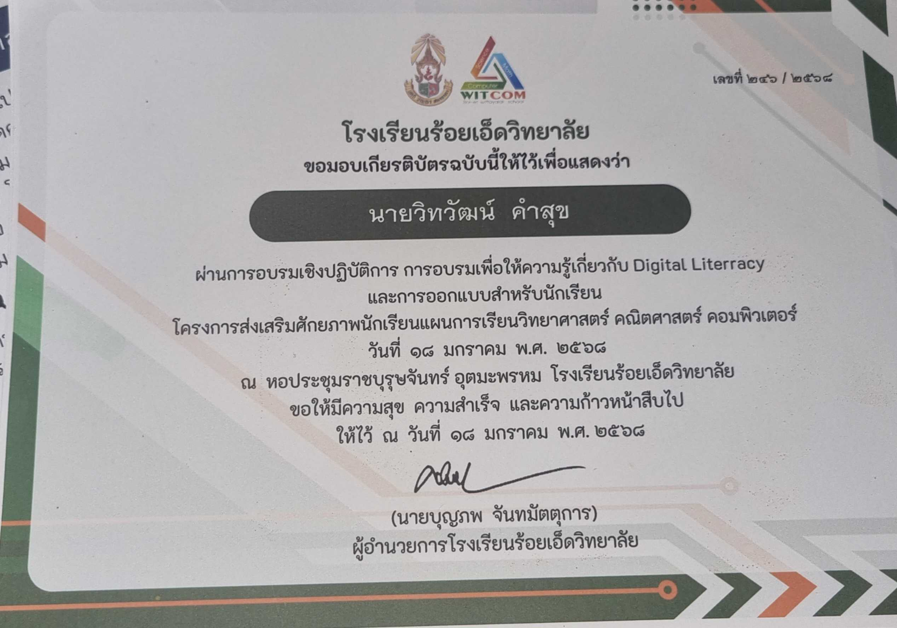
อบรมด้าน Digital Literacy และการออกแบบสำหรับนักเรียน เพื่อพัฒนาทักษะดิจิทัลและการคิดสร้างสรรค์
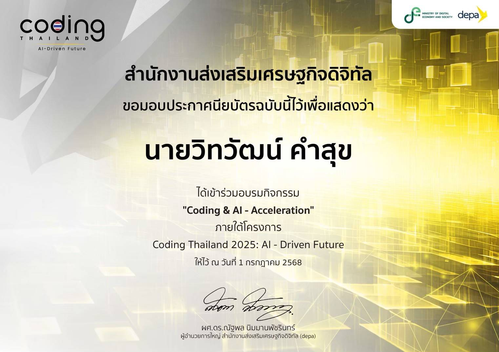
เข้าร่วมอบรมภายใต้โครงการ Coding Thailand 2025: AI-Driven Future โดยสำนักงานส่งเสริมเศรษฐกิจดิจิทัล
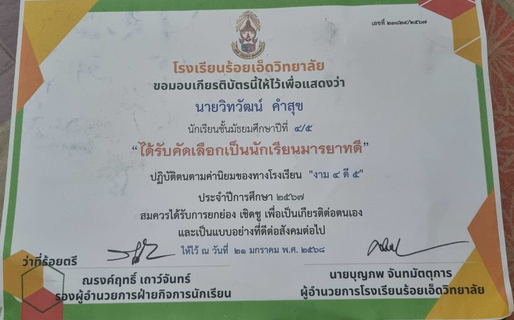
ได้รับคัดเลือกเป็นนักเรียนมารยาทดี สะท้อนความรับผิดชอบ วินัย และการปฏิบัติตนที่เหมาะสมในโรงเรียน
โทรศัพท์
092-470-9228
อีเมล
siriwarinpop@gmail.com
Facebook
CoPy TeRy
97 หมู่ 14 ตำบลขอนแก่น
อำเภอเมืองร้อยเอ็ด จังหวัดร้อยเอ็ด 45000
หมายเหตุ: หากนำเว็บไซต์นี้เผยแพร่สู่สาธารณะ แนะนำให้ซ่อนที่อยู่เต็มและเบอร์โทรศัพท์เพื่อความเป็นส่วนตัว